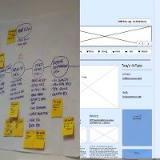

A Passion for Designing
I'm a UX Designer with a passion for creative design that focuses on giving a good user experience. I love all areas of digital media design and development, and use Axure RP Pro 7 and the Adobe creative suite including Illustrator, Photoshop, Fireworks and InDesign. I have worked on accessible web and mobile designs for a variety of sectors, including the beauty, catering, and creative sectors, and also worked on the MOBISERV project designing an interface for the needs of users of a digital robot at the BRL (Bristol Robotics Laboratory). I am highly motivated and dedicated to producing accessible web, tablet and mobile sites to a high standard.

With an MSc (merit) Software Development pathway (IT degree from UWE) that focused on the end site users, I found my passion is designing for users needs. I love a supportive UX/design and development community and co-organise the local SWUX group with monthly workshops and talks on designing. More recently, I'm part of the team that organises Accessible Bristol, encouraging digital accessibility for all.
Experience/Skills
Adobe Creative Suite
User Centred Design (UCD)
Axure RP Pro 7 Wireframing/Prototyping
Stakeholder Requirements Gathering
Devising Site Requirements & Specifications
Collaborative Design
Persona/Proto Persona Development
Wireframing
Information Architecture Design
Card Sorting: Open & Closed
Expert Heuristic & User-based Evaluations
A/B Testing
Usability Research
Accessible & Responsive Design
Graphic Design
Digital Development
Research: Primary & Secondary Sources
Usability Testing & Analysis
Task Analysis
Scenario Development
Fieldwork Observations
Interviewing Site Users
Focus Groups
Remote User Testing
Prototyping
Website Development
Designing the User Experience
I have an eye for detail and provide design that is engaging, highlighting good user experience. From research, I produce the information architecture and designs as functional wireframes/prototypes. I ensure usability and a good user experience for web, tablet and mobile. I have experience of a wide range of wireframing, illustrator and image editor packages, and I use Axure RP Pro 7 and the Adobe Creative Cloud suite on a day-to-day basis.
User Testing

With user research, I gather evidence for design decisions, understanding how users will interact with the design to give a good digital user experience.
Digital Development

I adapt to problem-solving, incorporating accessibility, responsiveness, and good development. As a means to ensuring my designs are workable I have used Java, Python, MySQL, Ruby on Rails, JQuery, HTML5 (W3C standards compliant), CSS3 and Drupal. I'm on GitHub.